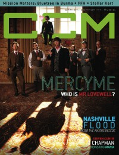
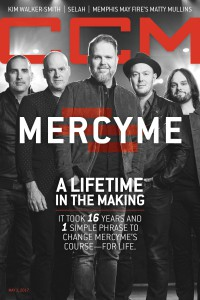

MercyMe
|  |
| June 2010 CCM Digital |
 |
| June 2012 CCM Digital |
| 1 April 2014 CCM Digital |
 |
| 1 May 2017 CCM Digital |
Media coverage:
- Jul 2000 in 7ball "Somebody Sign These Guys: MercyMe"
- Dec 2001 in CCM "Opening Acts: Getting To Know MercyMe", by Kerry Maffeo
- Oct 2002 in CCM "Real People. Real Worship.", by Steven Douglas Losey
- Jul 2003 in New Man "Guy Gear: MercyMe Hits Mainstream Radio", by Bob Liparulo
- Sep 2003 in CCM "Insider: 'I Can Only Imagine' Is Still The Little Song That Could", by Christina Farris
- Feb 2004 in CCM "'x' Things You Probably Didn't Know About...: MercyMe", by Michael Nolan
- Apr 2004 in CCM "Standing Room Only: The Imagine Tour", by Andy Argyrakis
- May 2004 in CCM "A Severe Mercy", by David A. Jenison
- May 2004 in Worship Leader "The Delicate Balance Between Artistry and Ambition"
- Jun 2004 in CCM "List-O-Rama: Christian Market Songs Covered by Mainstream Artists", by Chris Well
- 2005 in Christian Guitarist & Bassist "Interview: MercyMe", by Pamela Porosky
- Mar 2005 in Campus Life "Music: More than a Hit Song", by Todd Hertz
- Aug 2005 in CCM "Maw Maw's Boy", by Deborah Evans Price
- Nov 2005 in CCM "Truth Be Told: MercyMe"
- Dec 2005 in CCM "Well Mercy Me, Children!", by John J. Thompson
- Jan 2006 in CCM "Guide To Gear: MercyMe", by Russ Long
- Apr 2006 in CCM "!Pop", by Christina A. Banister
- Apr 2006 in CCM "Breakfast Feedback", by Jay Swartzendruber
- May 2006 in CCM "Breathe Deep", by Beau Black
- May 2006 in CCM "Coming Back To Rock", by Beau Black
- May 2006 in Worship Leader "Table Talk: MercyMe's Return to Self", by Julie Reid
- Sep 2006 in CCM "5 Questions With: MercyMe"
- Dec 2006 in CCM "The New Music Revolution", by John J. Thompson
- Mar 2007 in New Man "Male Matters: Family: Music From Home"
- Sep 2007 in CCM "In The Studio: MercyMe"
- Jan 2008 in Group "The Rip Out: Ministry and Media: MercyMe", by Scott Firestone IV
- Mar 2008 in CCM "Things I ♥: MercyMe"
- Feb 2010 in CCM Digital "What's New: In The Studio With..."
- Jun 2010 in CCM Digital "Lovewell: More than a Character... a Compassionate Way of Life", by Andy Argyrakis
- Jun 2012 in CCM Digital "A Beautiful Dichotomy", by Caroline Lusk
- Sep 2012 in CCM Digital "Tour Spotlight: Ignite Chicago Music Festival, Schaumburg Baseball Stadium, Schaumburg IL", by Andy Argyrakis
- 1 Apr 2014 in CCM Digital "Newbies... Meet MercyMe Again", by Caroline Lusk
- 1 Dec 2015 in CCM Digital "Christmas & Communion: God Has Entered Into The Human Story"
- 1 May 2017 in CCM Digital "A Lifetime In the Making", by Matt Conner
Albums & reviews:
2001: Almost There
2004: Live [video]
2005: The Christmas Sessions
2010: The Generous Mr. Lovewell
- Sep 2001 in YouthWorker, by Dave Urbanski
- Oct 2001 in Charisma, by Margaret Feinberg
- Oct 2001 in CCM, by Adam Woodroof
- Nov 2002 in Today's Christian Woman
- Nov 2002 in CCM, by Marcia Bartenhagen
- Nov 2002 in Christian Music Planet, by Steve Gannon
- Jan 2003 in YouthWorker, by Dave Urbanski
- Mar 2003 in Worship Leader, by Jack Franklin
- Jun 2004 in CCM, by David McCreary
- Sum 2004 in Worship Leader, by Davin Seay
- Jul 2004 in YouthWorker, by Dave Urbanski
- Jul 2004 in Today's Christian Woman, by Holly Vicente Robaina
- Sep 2004 in New Man, by Lorie Munizzi
- Jan 2005 in Living With Teenagers, by Joy Fisher
2004: Live [video]
2005: The Christmas Sessions
- Oct 2005 in Worship Leader
- Nov 2005 in YouthWorker, by Dave Urbanski
- Dec 2005 in CCM
- Apr 2006 in CCM, by Mark Joseph
- May 2006 in YouthWorker
- May 2006 in Worship Leader
- Nov 2007 in Worship Leader
- Nov 2007 in CCM, by Mike Parker
- Dec 2007 in Charisma, by Cameron Conant
- Jan 2008 in YouthWorker, by Mike Parker
- Jan 2008 in Today's Christian Woman
2010: The Generous Mr. Lovewell
- May 2010 in Charisma
- May 2010 in CCM Digital, by Andy Argyrakis
- Jun 2010 in Worship Leader, by Andrea Hunter
- Jul 2010 in YouthWorker, by Andy Argyrakis
- Sep 2010 in Living With Teenagers, by Randy Williams
- Jun 2012 in Worship Leader, by Jeremy Armstrong
- Jun 2012 in CCM Digital, by Grace S. Aspinwall
- Jul 2012 in Christianity Today, by Ron Augustine
- 1 Feb 2014 in CCM Digital, by Andy Argyrakis
- 1 Apr 2014 in CCM Digital, by Grace S. Aspinwall
- May 2014 in Worship Leader, by Jay Akins
- 1 Nov 2015 in CCM Digital, by Andy Argyrakis
- 15 Mar 2017 in CCM Digital, by Matt Conner
Award Summary (Nominations / Wins)
Dove Awards- 2002 Dove Awards
- Pop/Contemporary Recorded Song: "I Can Only Imagine"
- Song: "Spoken For"
- Pop/Contemporary Album: Spoken For
- Group of the Year
- Artist
- Group of the Year
- Artist
- Pop/Contemporary Recorded Song: "Word Of God Speak"
- Pop/Contemporary Album: Undone
- Group of the Year
- Artist
- Long Form Music Video: Live [video]
- Group of the Year
- Pop/Contemporary Album: Coming Up to Breathe
- Group of the Year
- Song: "Bring The Rain"
- Group of the Year
- Song: "All Of Creation"
- Group of the Year
- Pop/Contemporary Recorded Song: "All Of Creation"
- Short Form Music Video: "Shake"
- Song: "Greater"
- Artist
- Contemporary Christian Artist
- Christmas Album: MercyMe! It's Christmas
- Song: "Even If"
- Pop/Contemporary Album: Lifer
- Artist
- Pop/Contemporary Recorded Song: "Even If"
- Artist
- Contemporary Christian Artist
- Artist
- 2006 Grammy Awards
- Best Pop/Contemporary Gospel Album: Coming Up to Breathe
- Best Gospel Song: "You Reign"
- Best Contemporary Christian Music Album: Welcome to the New
- Best Contemporary Christian Music Performance/Song: "Shake"
- Best Contemporary Christian Music Album: Lifer
- Best Contemporary Christian Music Performance/Song: "Even If"
- Best Contemporary Christian Music Performance/Song: "Grace Got You"
Books about MercyMe
- "MercyMe" in The Encyclopedia of Contemporary Christian Music (Mark Allan Powell, 2002)
© 2011 CMnexus. Last updated September 2019. Contact: editor -AT- cmnexus -DØT- org About